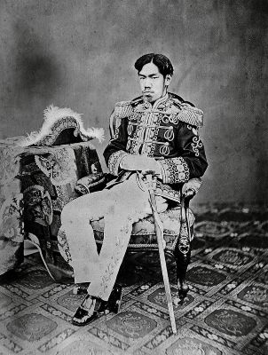
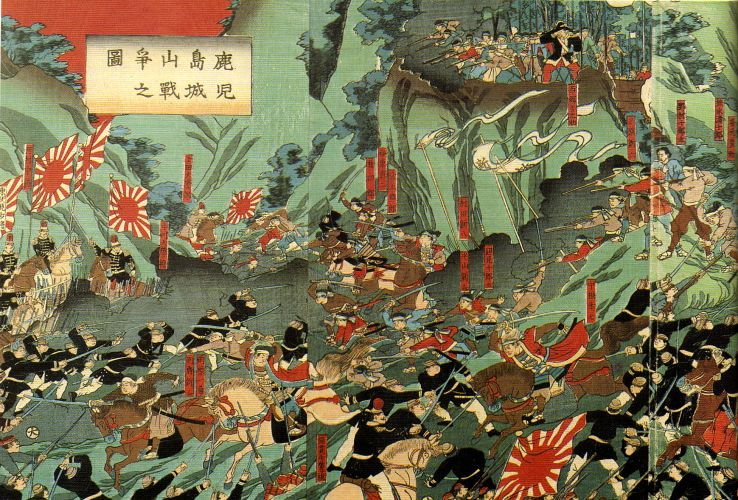
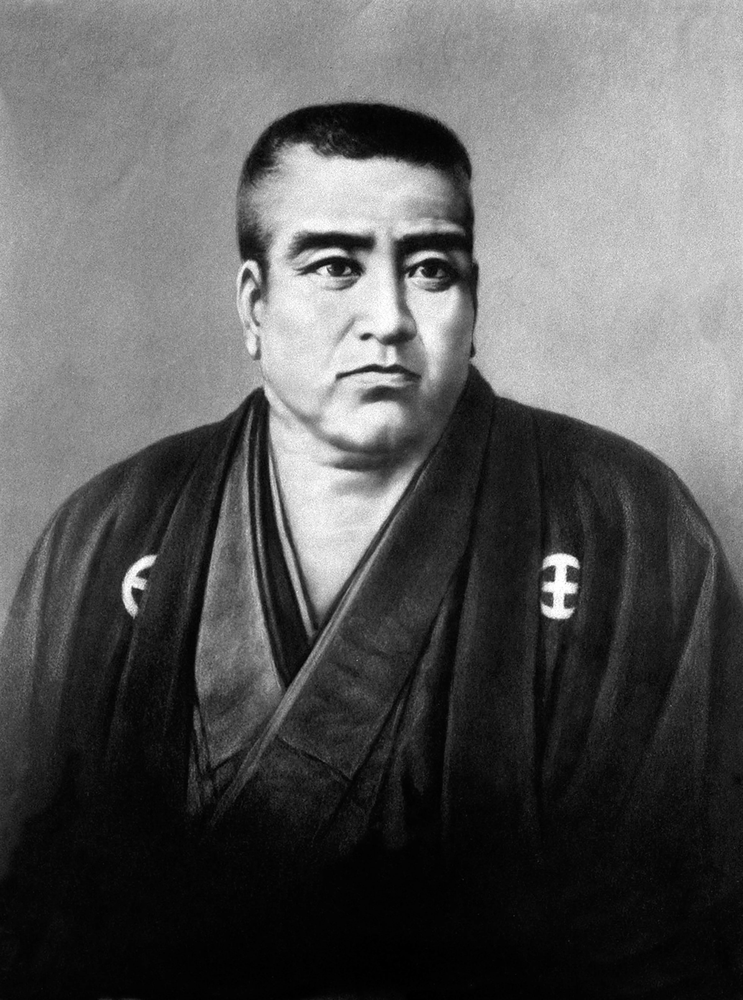
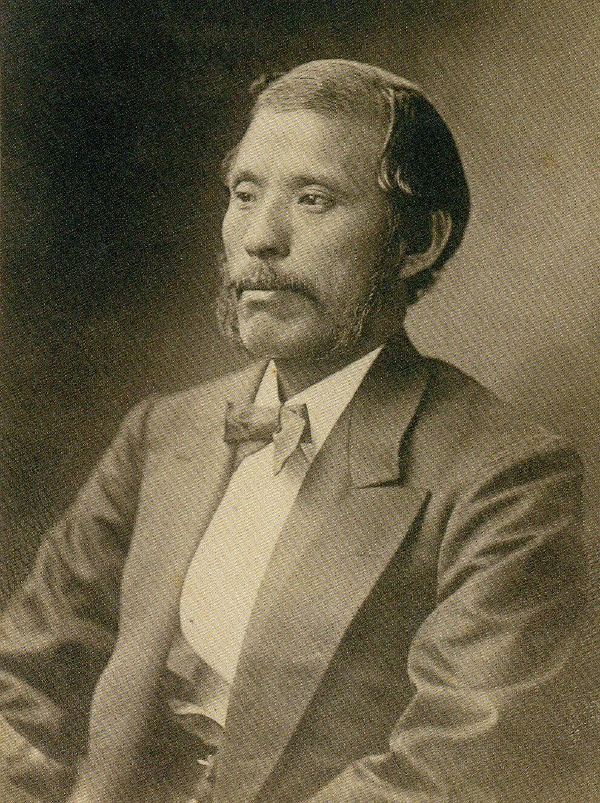
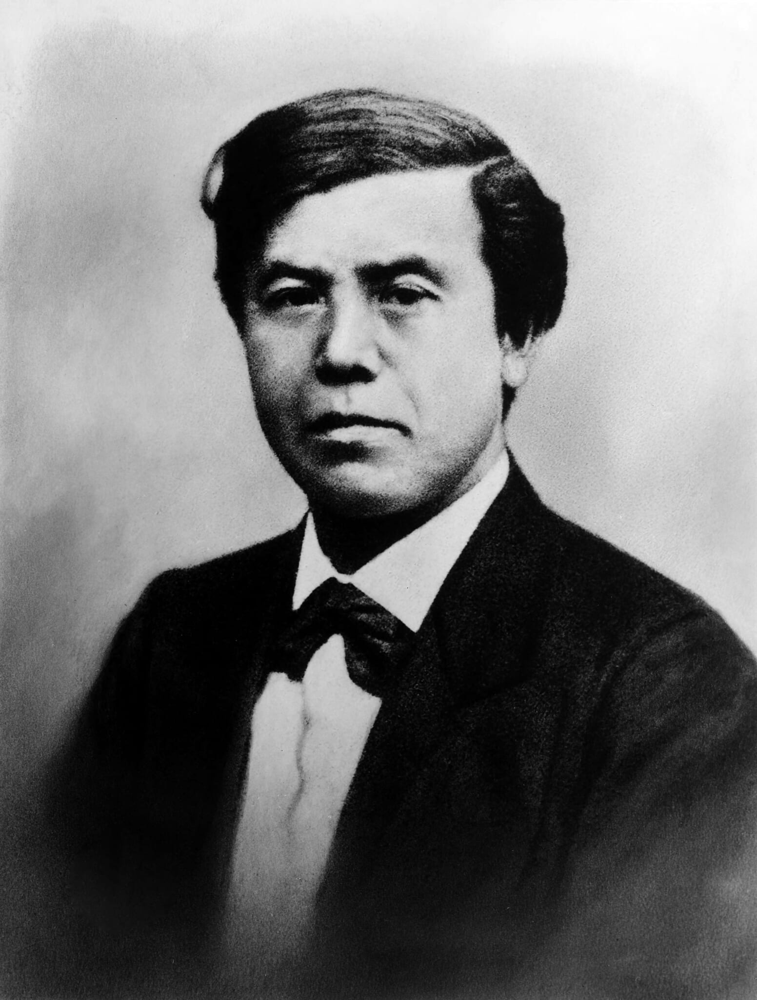
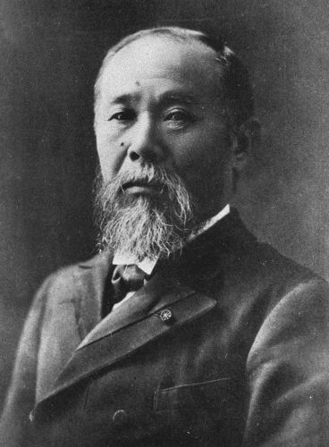
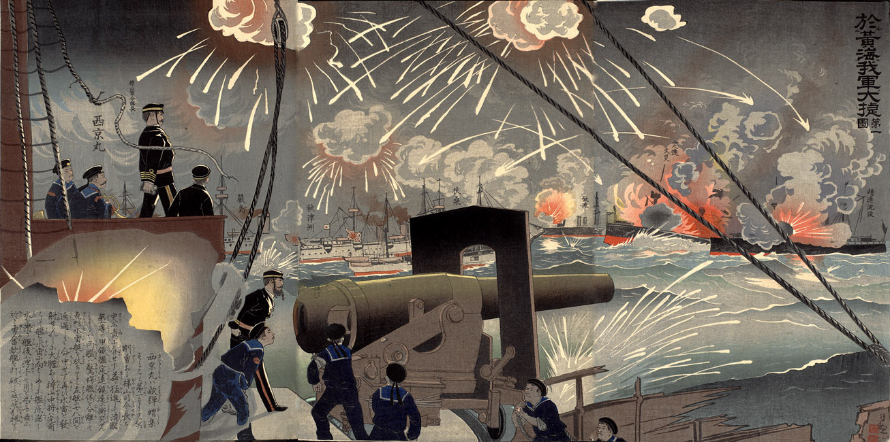
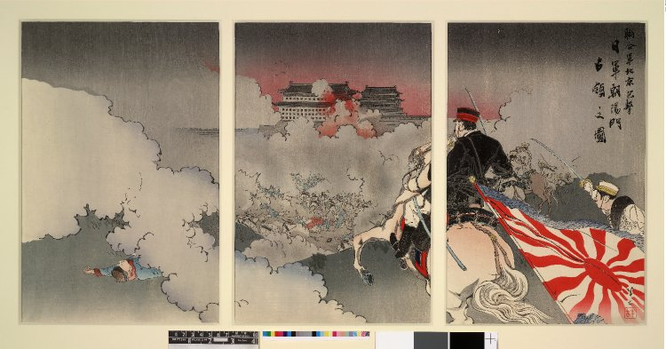
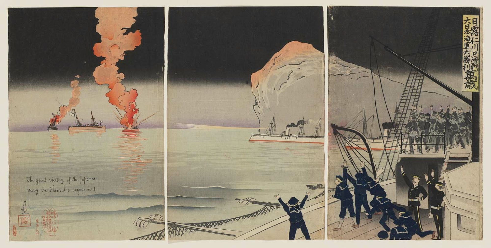

The Meiji Period

Emperor Meiji
The Abolition of the Samurai Class
The Meiji Restoration brought sweeping reforms that redefined Japan's social order, and the dismantling of the samurai class was the most controversial issue in the 1870s. For centuries, samurai had been Japan's warrior elite,
enjoying hereditary status, stipends, and privileges as retainers of feudal lords. However, with the creation of a modernising, centralized state, the Meiji government viewed the old warrior class as incompatible with
its goals of industrialization and national consolidation. There was also a financial incentive to remove samurai status in the new society, as paying the samurai stipends took almost half of the Meiji government's revenue in
its first few years in power. As early as the 1870s, the government began implementing policies that gradually eroded the samurai's traditional position in society.
The first major blow came with the abolition of feudal domains (han) in 1871, which dissolved the political structures that had supported samurai. The former daimyo were now offered the title of kazoku, which made them members of the Meiji peerage and aristocracy
Their stipends were targeted next, and were initially converted into government bonds, but these quickly lost value, weakening the economic base of many, already impoverished former warriors. Reforms also opened public office, military service, and education to all classes,
effectively ending the monopoly samurai had on leadership. However, former middle- to lower-ranking samurai from Satsuma and Choshu still dominated key government posts. As Japan moved toward a merit-based bureaucracy and conscript army, the samurai's distinct social role faded.
By 1876, the government issued the Edict on the Abolition of Sword Wearing, which prohibited samurai from carrying weapons in public, a right now reserved for serving members of the new conscript army. Although symbolic, this was a decisive statement: the privileges of the warrior class were no
longer recognized. For many samurai, it represented the final break from centuries of tradition. The edict contributed to social tensions that would eventually erupt into armed resistance, notably the Satsuma Rebellion led by Saigō Takamori in 1877. Saigo had been one of the primary Satsuma leaders
during the Bakumatsu period and was a key figure behind the Meiji Restoration. He was an influential figure in the early Meiji government, but became disillusioned when the government was divided on invading Korea in 1873. He was in favour of the planned military expedition, and was so dedicated to
this position that he offered to go to Korea as an ambassador and insult and infuriate the Korean government so much that it would trigger his own assassination. However, his suggestion was overruled and he resigned from government in protest.
The rebellion's defeat confirmed that the samurai era had truly ended. Yet, while the class disappeared, their values did not. Many former samurai adapted to new roles as bureaucrats, military officers, educators, or entrepreneurs.
Their ethos of discipline, loyalty, and service influenced modern institutions, especially the Imperial Army and public education system. In this way, the legacy of the samurai endured, woven into the fabric of a rapidly modernizing nation.

Ukiyo-e print depicting Saigo's last stand at the Battle of Shiroyama in 1877
The Three Great Nobles of the Meiji Restoration
Saigo Takamori

Born in 1828 in Kagoshima. He became a retainer to the Satsuma daimyo Shimazu Nariakira and was an influential figure among Satsuma samurai. He was exiled twice to the Ryukyu Islands,
the first time to avoid arrest by Bakufu authorities, the second time for disobeying orders. In the lead up to the Restoration, he led shogunal forces against Choshu for a punitive expedition,
but he negotiated a settlement before hostilities began. He was a leader of the Meiji Restoration and the new Meiji government, but he left it in 1873 when a plan to invade Korea was overruled.
He led the 1877 Satsuma Rebellion against the Imperial Army, dying in September of that year at the final battle of Shiroyama. He became an iconic samurai figure in popular culture ever since his death.
Okubo Toshimichi

Born in 1830 in Kagoshima. Okubo was a middle-ranking samurai who rose to become the leading political figure in Satsuma during the Bakumatsu era. After the Meiji government was established, he became the leading politician, holding the
offices of Home Minister and Finance Minister. He initiated many of the reforms and modernisation policies of the 1870s, including the abolishing of the samurai and the abolition of the domains. He left Japan with the Iwakura mission from 1871 - 1873,
which was a diplomatic mission to various countries in North America and Europe to study government and industry. He suppressed Saigo Takamori's rebellion in 1877. The next year in 1878, he was assassinated.
Kido Takayoshi

Born in 1833 in Choshu. He was also known as Kido Koin. During the Bakumatsu period, he took part in Choshu military activities including the Kinmon incident in 1864, which was an unsuccessful attempt by Choshu to take control of Emperor Komei in Kyoto. He
was one of the people involved in the creation of the Satcho Alliance, representing the Choshu domain. A member of the new Meiji government, he accompanied Okubo on the Iwakura mission from 1871 to 1873. He died of illness in May 1877 during the Satsuma rebellion.
The Meiji Government and Modernisation
Japan transformed rapidly with modernisation and it looked at the West for guidance
The Meiji government sought to transform Japan into a modern nation-state capable of standing equal with Western powers. Shortly after the Restoration in 1868, leaders consolidated political authority under the emperor, though real power rested
with a small group of oligarchs, primarily middle-ranking samurai from the Satsuma, Chōshū, Tosa, and Hizen domains. These statesmen, known collectively as the genrō, steered Japan through its early modernization by borrowing Western institutional
models with Japanese political culture. Their leadership enabled the rapid restructuring of government without significant internal collapse.
Centralization was a key priority. The abolition of the han and the creation of prefectures directly controlled by Tokyo reorganized the political map of Japan. The government established ministries modeled after Western bureaucracies—such as
Finance, Education, and the Army, ensuring specialized administration and national standards. This centralized system allowed the state to manage taxation, education, and military conscription efficiently, all of which became engines of Japan's modernization.

The Iwakura Mission in 1872.

Ito Hirobumi became the first Prime Minister of Japan in 1885
A major milestone in political development was the introduction of the Meiji Constitution in 1889. Heavily influenced by the Otto von Bismarck's Prussia, the constitution created a constitutional monarchy that preserved significant powers for the emperor while establishing
a bicameral legislature, the Imperial Diet. Although suffrage was initially limited to wealthy male taxpayers, the Diet represented Japan's first step toward parliamentary governance. It provided a framework for political debate, legislation, and controlled participation
by the public.
Despite the formal structures of constitutionalism, real political power during much of the period remained with the oligarchs and the growing network of bureaucracy and military leadership. Still, by the early 20th century, political parties gained influence, and cabinet
ministers increasingly came from elected representatives rather than aristocrats. The government of the Meiji period thus laid the foundations for Japan's modern political system—centralized, bureaucratic, constitutional, and deeply shaped by negotiations between tradition and
modernity.
Establishing a Pacific Empire
First Sino-Japanese War

Boxer Rebellion

Russo-Japanese War

As Japan modernized, its leaders became increasingly aware of global imperial dynamics and the threats they posed. Western powers had already forced unequal treaties onto Japan, and the Meiji leadership feared that without expansion and military strength, the nation would
remain vulnerable. This prompted Japan to pursue a policy of defensive imperialism—building an empire not merely for wealth or prestige, but to secure national independence. The Meiji state thus embarked on a path of territorial ambition driven by strategic necessity and
rising nationalism.
The modernization of the military was crucial to Japan's imperial goals. The government created a conscript army, introduced Western tactics, and built a modern navy capable of projecting power beyond the home islands. Military success soon followed. In the First Sino-Japanese
War (1894-1895), Japan defeated Qing China, gaining control of Taiwan and influence over Korea. This victory shocked the world and signaled Japan's emergence as a regional power, but also intensified competition with Russia over dominance in East Asia.
Japan's ambitions culminated in the Russo-Japanese War (1904-1905), a conflict that ended with Japan's decisive victory—the first time an Asian power defeated a major European empire in modern warfare. The Treaty of Portsmouth granted Japan control of Port Arthur, the southern
half of Sakhalin, and expanded its influence in Korea. The triumph fueled national pride and legitimized Japan's imperial aspirations, reinforcing the belief that modernization had elevated Japan to the ranks of global powers.
Imperialism also reshaped Japan's domestic identity. The government promoted nationalism in schools, revived Shintō as a unifying ideology, and emphasized loyalty to the emperor. Expansion overseas was portrayed as both a civilizing mission and a natural step for a modern nation.
By the end of the Meiji period, Japan had laid the groundwork for a formal empire—one that would expand dramatically in the decades that followed, for better or for worse, as Japan sought to secure its place on the world stage.